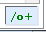

How do I launch the debugger and set a breakpoint in a linqpad script?
I do this most days. The secret is:
Debugger.Launch();
When the Debugger.Launch() line is hit you will be prompted to choose an instance of Visual Studio, or to open a new instance.
If you find that the Debugger.Launch line does not launch a debugger....
I had to toggle the "Compiler Optimizations" button (lower right)
